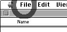
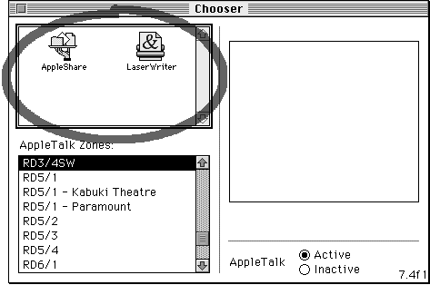
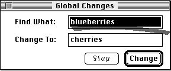
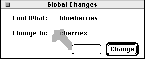
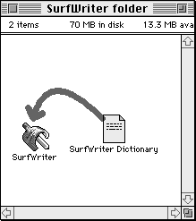

Legacy Document
Important: The information in this document is obsolete and should not be used for new development.
Important: The information in this document is obsolete and should not be used for new development.


Designing Coachmarks
A coachmark is an onscreen graphic that circles or points to an item on the screen. Use coachmarks to guide the user's attention to screen areas described in a help instruction, typically if the user needs to perform an action (for example, to open a menu or type information). Figure 2-53 shows a coachmark circling a menu that the user needs to open.
The coachmark remains visible until system software processes the next system event or user event in the application or panel.
You can assign only one coachmark per panel, and one is sufficient if you present only one action or concept per panel. Once you assign a coachmark to a particular panel, it appears each time the user opens that panel.
Apple provides five types of coachmarks and several built-in coachmark styles. These are described next.
- IMPORTANT
- You should use coachmarks only for those elements of the user interface whose location or software condition you can verify; otherwise, you can inadvertently create a coachmark that appears at a random location on the screen.

Using Coachmark Types
There are five coachmark types: menu, item, object, window, and AppleScript.A menu coach is a coachmark for a specific menu or menu item. When the user opens a panel with a menu coach, Apple Guide uses that coach style and coach color to draw a coachmark for the specified menu and menu item. When the user pulls down that menu, Apple Guide uses the specified color and text style for the specified menu item.
An item coach is a coachmark for an item in a dialog box or other interface element in a window (or dialog box). When the user opens a panel that includes a command with an item coach, Apple Guide uses the specified coach style to draw a coachmark for the specified item.
An object coach is a coachmark for an object based on a rectangle that your application returns for the named object. When the user opens a panel that includes a command that names a defined object coach, it sends an Apple event to your application that requests it to return a rectangle for the named object. When Apple Guide receives the rectangle for the object, Apple Guide draws the coachmark.
A window coach is a coachmark for a specific area of a window. When the user opens a panel that includes a command that names a defined window coach, Apple Guide uses the specified coach style to draw a coachmark based on the location of the coachmark, as specified by the command.
An AppleScript coach is a coachmark that uses AppleScript to determine the object to mark. When the user opens a panel that includes a command that names a defined AppleScript coach, Apple Guide executes the specified script. Once the script returns a rectangle for the object, Apple Guide draws the coachmark.
For more information on creating these coachmark types, see the chapter "Guide Script Command Reference."
Using Coachmark Styles
Apple Guide provides four built-in coachmark styles: a red circle, a red underline, a red arrow, and a green "X" character.
For example, Figure 2-54 shows a red circle coachmark around the Macintosh Chooser icons.
- Use the red circle coachmark for a menu coach or to tell the user where to click in a limited or enclosed area.
- Use the red underline coachmark to indicate an item in a menu or to tell the user where to type information.
- Use the red arrow to point to an area on the screen. It is particularly effective for pointing to the target of a drag.
- Use the green "X" character to mark where the user needs to type information or to mark a large region.
Figure 2-54 A red circle coachmark

Figure 2-55 shows a red underline coachmark indicating the Find What field where the user needs to type text.
Figure 2-55 A red underline coachmark

Similarly, you can use the green X to point to an area on the screen. For example, Figure 2-56 shows the green X pointing to the Change To field, where the user needs to type text.
Figure 2-56 A green X coachmark

The red arrow is particularly effective for pointing to the target of a drag. For example, Figure 2-57 shows the red arrow demonstrating how to drag the SurfWriter dictionary to the SurfWriter application.
Figure 2-57 A red arrow coachmark
